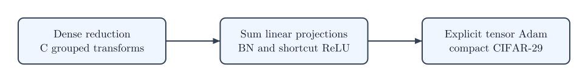
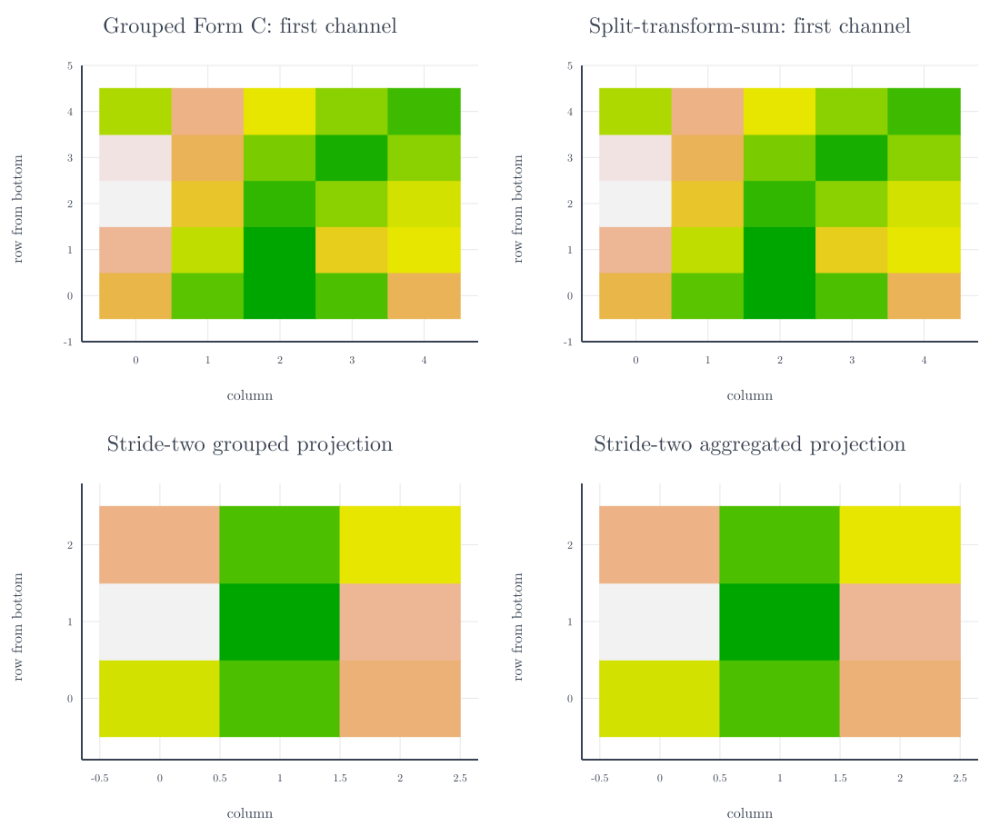
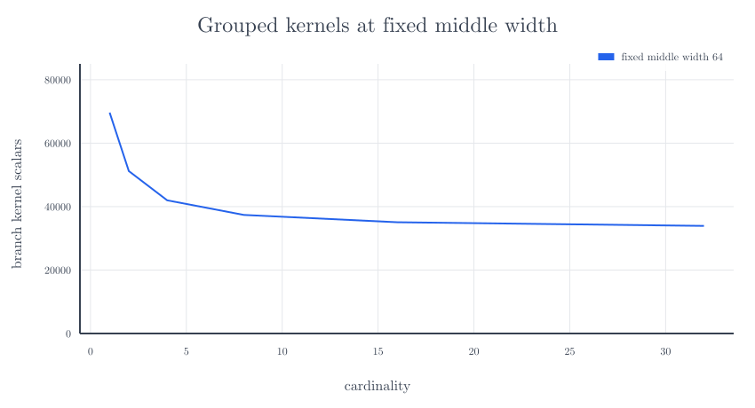
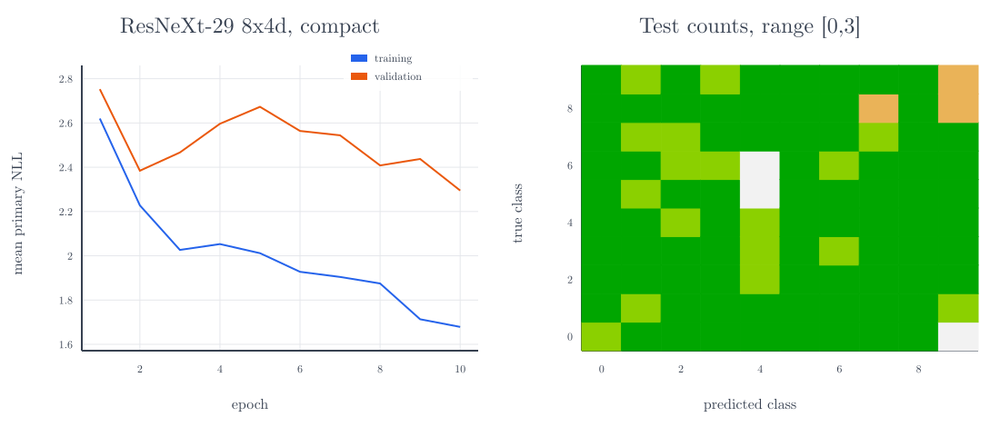
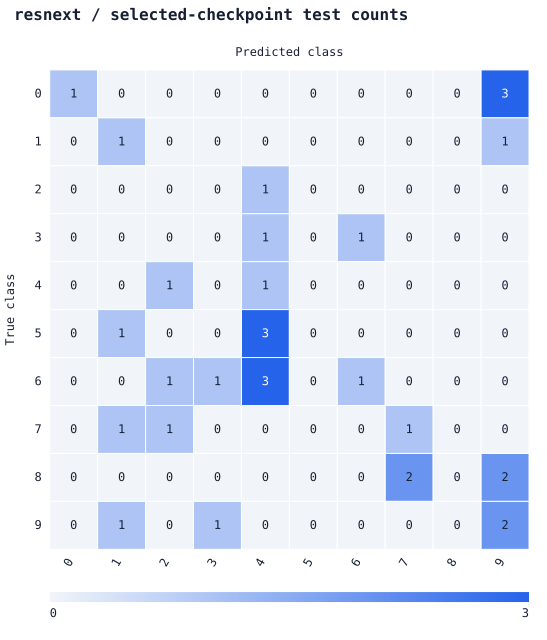

ResNeXt: Cardinality and Aggregated Transformations
Abstract
A grouped bottleneck represents multiple learned transformations with one efficient convolution. We compare Form C against explicit split-transform-sum values and derivatives, check the complete ImageNet architecture, then fit a compact 29-layer CIFAR model through a visible tensor Adam loop.
Source example: examples/cpp/source/nn/1_convolutional_neural_networks/1.3_residual_and_dense_families/resnext.cpp.
The method
Let C be cardinality, w the stage base and d=floor(w*base_width/64). A Form-C block reduces input channels to Cd with a dense 1×1 filter, applies C independent d→d 3×3 convolutions, then expands to 4w with a dense 1×1 filter. BN/ReLU follows the first two filters; final BN precedes shortcut addition and ReLU. Later stage entries downsample in the grouped 3×3. At unchanged input/output width 256, the branch kernel budget is
The 1×64d and 32×4d choices use 69632 and 70144 branch kernel scalars, respectively. Holding Cd fixed while increasing C reduces only the spatial-filter term. Cardinality changes connectivity, so equal budgets do not imply equal functions or measured speed. The separate transform/sum fixture slices the same weights, normalizes each reduced group, and sums the final linear projections before the last BN; applying that BN separately to branches would change the result. Nontrivial moving means/variances and gamma/beta expose normalization mistakes. Both stride-one identity and stride-two projection cases compare all input and parameter derivatives, with float32 relative tolerance 3e-5.
Full ResNeXt-50 32×4d uses a 7×7/2 stem and 3×3/2 pool, sixteen 3/4/6/3 blocks, outer widths 256/512/1024/2048 and 56/28/14/7 feature sides at 224 pixels. It has 25028904 learned and 68224 moving scalars. BN learns scale/shift with epsilon 1e-5. He-uniform fan-in replaces the release's normal fan-out initialization; one grouped HWIO leaf replaces per-group example filters. ImageNet depths 101/152 are also supported.
The compact fit preserves all nine CIFAR-29 bottlenecks: outer widths 64/128/256, cardinality eight, d=4/8/16, stem width 16 and no initial pool. It has 359898 learned and 6304 moving scalars. Ten epochs on 64 fitting images use batch eight, Adam(.001), explicit .0001/2 kernel L2 and independent padded crop/flip augmentation. Thirty-two validation images select paired parameter/BN checkpoints before evaluating 32 official-test images. The original source's 12k-row/twelve-epoch run and the paper's long SGD run are different experiments. This bounded fit illustrates optimization, not a published accuracy benchmark.
The concept diagram below is drawn by dm::graphics::Diagram. Its editable C++
source is the complete block below; regeneration uses the same datamunge toolchain
as the numerical examples. Exports consume the saved local SVG.
#include <dm/dm.hpp>
int main() {
std::filesystem::create_directories("build");
dm::graphics::Diagram diagram;
diagram.node("n0", {0.0, 0}, "Dense reduction\nC grouped transforms");
diagram.node("n1", {5.2, 0}, "Sum linear projections\nBN and shortcut ReLU");
diagram.node("n2", {10.4, 0}, "Explicit tensor Adam\ncompact CIFAR-29");
diagram.edge("n0", "n1").edge("n1", "n2");
diagram.save_svg("build/resnext_concept.svg");
}
Executed tensor architecture
This figure executes the inference configuration shown in the code, using a zero-valued shape probe without fitting or loading a checkpoint. Named stage boundaries group whole subgraphs where available; other nodes retain functional-layer detail. Exact batch-inclusive shapes and reachable parameter totals come from the trace. Shared linear scales map spatial dimensions and channel counts to blocks; the one-pixel visibility floor is disclosed in the legend. Labels use compact monospace text, rotate counterclockwise and sit beside their own glyphs. Arrows flow left to right; wide diagrams scroll at native size on the website.
#include <dm/dm.hpp>
int main() {
namespace n = dm::nn;
namespace m = n::models;
n::set_num_threads(2);
std::filesystem::create_directories("build");
n::models::ResNeXtConfig cfg;
cfg.depth = 29;
cfg.cifar_layout = true;
cfg.cardinality = 8;
cfg.base_width = 16;
cfg.stage_width = 16;
cfg.classes = 10;
n::ParameterStore p(17), state(17);
n::Module architecture_model(
[&](const n::Tensor& image) {
const auto out = n::models::ResNeXt(p, state, image, cfg, false);
auto previous = image;
for (std::size_t i = 0; i < out.stages.size(); ++i) {
n::model_stage("Stage " + std::to_string(i + 1), previous, out.stages[i]);
previous = out.stages[i];
}
return out.logits;
},
"ResNeXt: Cardinality and Aggregated Transformations");
n::ModelPlotOptions options;
options.style = n::ModelPlotStyle::Flow;
options.detail = n::ModelPlotDetail::Blocks;
options.labels = {.type = n::ModelPlotLabel::NameAndShape, .size = 12, .wrap = 24};
options.spacing = {.layer = 24, .lane = 12, .label = 8, .margin = 20};
options.sizing.spatial_size = 96;
options.sizing.channel_size = 42;
options.sizing.minimum_extent = 1;
options.opacity = .8;
const auto diagram = architecture_model.plot(n::zeros({1, 32, 32, 3}), options);
diagram.save_svg("build/resnext_architecture.svg");
std::print(
"{} displayed nodes; {} reachable learned values.\n",
diagram.nodes().size(),
diagram.parameter_count());
}8 displayed nodes; 359898 reachable learned values.

Simple aggregation example
The alternative graph retains every group contribution and every derivative.
#include <dm/dm.hpp>
int main() {
namespace nn = dm::nn;
nn::set_num_threads(2);
auto layout = dm::graphics::RLayout::create(2, 2);
for (int stride : {1, 2}) {
nn::ParameterStore p(17), state(17);
nn::models::ResNetNormConfig cfg;
cfg.scale = true;
cfg.epsilon = 1e-5;
const auto input_values =
.2 + .3 * nn::sin(.17 * nn::arange(0, 400).to(nn::DType::Float32));
nn::Tensor input = input_values.reshape({2, 5, 5, 8});
{
nn::NoGradGuard guard; // create the parameters, then set nontrivial normalization state
nn::models::ResNeXtBlock(p, state, "block", input, 2, 2, 64, cfg, stride);
for (const auto &name : state.names()) {
const auto count = state.at(name).numel();
const auto i = nn::arange(0, count).to(nn::DType::Float32);
state.set(name,
name.find("moving_var") != std::string::npos ? .7 + .03 * i : .03 * (i - 2));
}
for (const auto &name : p.names())
if (name.find("/bn/") != std::string::npos) {
const auto count = p.at(name).numel();
const auto i = nn::arange(0, count).to(nn::DType::Float32);
p.set(name, name.find("gamma") != std::string::npos ? .8 + .03 * i : .1 + .01 * i);
}
}
input.requires_grad_(true);
const auto grouped =
nn::models::ResNeXtBlock(p, state, "block", input, 2, 2, 64, cfg, stride);
auto norm = [&](const nn::Tensor &x, const std::string &layer, std::int64_t start,
std::int64_t count) {
const auto name = "block/" + layer + "/bn/";
auto slice = [&](const nn::ParameterStore &store, const std::string &part) {
return nn::slice_axis(store.at(name + part), 0, start, start + count);
};
return (x - slice(state, "moving_mean")) *
nn::rsqrt(slice(state, "moving_var") + cfg.epsilon) * slice(p, "gamma") +
slice(p, "beta");
};
std::vector<nn::Tensor> branches;
for (int group = 0; group < 2; ++group) {
const nn::Tensor first =
nn::slice_axis(p.at("block/conv1/W"), 3, 2 * group, 2 * group + 2);
nn::Tensor h =
nn::relu(norm(nn::conv2d(input, first, nn::conv_options(1, nn::Padding::Valid)),
"conv1", 2 * group, 2));
const nn::Tensor middle =
nn::slice_axis(p.at("block/conv2/W"), 3, 2 * group, 2 * group + 2);
h = nn::conv2d(nn::pad(h, {{0, 0}, {1, 1}, {1, 1}, {0, 0}}), middle,
nn::conv_options(stride, nn::Padding::Valid));
h = nn::relu(norm(h, "conv2", 2 * group, 2));
const nn::Tensor last =
nn::slice_axis(p.at("block/conv3/W"), 2, 2 * group, 2 * group + 2);
branches.push_back(nn::conv2d(h, last, nn::conv_options(1, nn::Padding::Valid)));
}
nn::Tensor shortcut = input;
if (stride == 2)
shortcut = norm(
nn::conv2d(input, p.at("block/shortcut/W"), nn::conv_options(2, nn::Padding::Valid)),
"shortcut", 0, 8);
const nn::Tensor aggregated =
nn::relu(shortcut + norm(branches[0] + branches[1], "conv3", 0, 8));
auto variables = p.parameters();
variables.insert(variables.begin(), input);
const auto ga = nn::grad(nn::mean(nn::square(grouped.output)), variables);
const auto gb = nn::grad(nn::mean(nn::square(aggregated)), variables);
std::vector<std::pair<nn::Tensor, nn::Tensor>> pairs = {{grouped.output, aggregated}};
for (std::size_t i = 0; i < ga.size(); ++i)
pairs.emplace_back(ga[i], gb[i]);
double error = 0;
for (const auto &[x, y] : pairs) {
if (x.shape() != y.shape())
return 1;
const auto a = x.to_vector<float>(), b = y.to_vector<float>();
for (std::size_t i = 0; i < a.size(); ++i)
error = std::max(error,
std::abs(double(a[i]) - b[i]) /
std::max({1., std::abs(double(a[i])), std::abs(double(b[i]))}));
}
if (error > 3e-5)
return 1;
std::print("Stride {}: grouped versus split-transform-sum outputs and all input/parameter "
"derivatives agree; relative error {:.9f}.\n",
stride, error);
const auto channel = [](const nn::Tensor &t) {
return nn::slice_axis(nn::slice_axis(t, 0, 0, 1), 3, 0, 1)
.reshape({t.size(1), t.size(2)});
};
if (stride == 1) {
layout.add(
nn::plot_tensor_map(channel(grouped.output)).title("Grouped Form C: first channel"));
layout.add(nn::plot_tensor_map(channel(aggregated))
.title("Split-transform-sum: first channel"));
} else {
layout.add(
nn::plot_tensor_map(channel(grouped.output)).title("Stride-two grouped projection"));
layout.add(
nn::plot_tensor_map(channel(aggregated)).title("Stride-two aggregated projection"));
}
}
std::filesystem::create_directories("build");
layout.size(1100, 920).fit_panels().save_svg("build/resnext_aggregation.svg");
}Stride 1: grouped versus split-transform-sum outputs and all input/parameter derivatives agree; relative error 0.000000179. Stride 2: grouped versus split-transform-sum outputs and all input/parameter derivatives agree; relative error 0.000000170.

Complete topology and budgets
Full forward counts and compact full-depth backward checks establish separate claims.
#include <dm/dm.hpp>
int main() {
namespace n = dm::nn;
n::set_num_threads(2);
{
n::NoGradGuard guard;
n::ParameterStore p(17), state(17);
const auto out = n::models::ResNeXt(p, state, n::zeros({1, 224, 224, 3}));
if (p.count() != 25028904 || state.count() != 68224 || out.blocks.size() != 16 ||
out.stages.size() != 4 || out.stem.shape() != n::Shape{1, 56, 56, 64} ||
out.logits.shape() != n::Shape{1, 1000})
return 1;
for (int i = 0; i < 4; ++i)
if (out.stages[i].shape() != n::Shape{1, 56 / (1 << i), 56 / (1 << i), 256 << i})
return 1;
std::print("Full ResNeXt-50 32x4d: {} learned / {} moving scalars; all 224-pixel stage "
"shapes verified.\n",
p.count(), state.count());
}
n::ParameterStore p(17), state(17);
n::Generator rng(29);
n::models::ResNeXtConfig cfg;
cfg.cifar_layout = true;
cfg.depth = 29;
cfg.cardinality = 8;
cfg.base_width = 16;
cfg.stage_width = 16;
cfg.classes = 10;
cfg.update_stats = false;
const auto out =
n::models::ResNeXt(p, state, n::normal({2, 16, 16, 3}, 0, .2, rng), cfg, true);
if (p.count() != 359898 || state.count() != 6304 || out.blocks.size() != 9)
return 1;
for (const auto &g : n::grad(n::mean(n::square(out.logits)), p.parameters()))
if (!std::isfinite(n::sum(n::abs(g)).item()))
return 1;
std::vector<double> c = {1, 2, 4, 8, 16, 32}, budget;
for (double groups : c) {
const double d = 64 / groups;
budget.push_back(2 * 256 * groups * d + 9 * groups * d * d);
}
auto plot = dm::graphics::RPlot::create();
plot.lines(c, budget, "fixed middle width 64", {37, 99, 235})
.title("Grouped kernels at fixed middle width")
.x_label("cardinality")
.y_label("branch kernel scalars")
.y_limits(0, 85000);
std::filesystem::create_directories("build");
dm::graphics::RLayout::create(1, 1).add(plot).size(850, 460).fit_panels().save_svg(
"build/resnext_budget.svg");
std::print("Complete compact 29-layer model: {} learned / {} moving scalars; nine blocks "
"and all parameter gradients finite.\nAt 256 input/output channels, 1x64d costs "
"69632 branch kernels; 32x4d costs 70144. BN/projections excluded.\n",
p.count(), state.count());
}Full ResNeXt-50 32x4d: 25028904 learned / 68224 moving scalars; all 224-pixel stage shapes verified. Complete compact 29-layer model: 359898 learned / 6304 moving scalars; nine blocks and all parameter gradients finite. At 256 input/output channels, 1x64d costs 69632 branch kernels; 32x4d costs 70144. BN/projections excluded.

Dataset and explicit fitting
Original pixels precede the visible optimization loop; CIFAR-10 must be cached locally.
#include <dm/dm.hpp>
int main() {
namespace n = dm::nn;
std::filesystem::path cache;
if (const auto *p = std::getenv("DATAMUNGE_DATA_DIR"))
cache = p;
else if (const auto *p = std::getenv("XDG_CACHE_HOME"))
cache = std::filesystem::path(p) / "datamunge/datasets";
else
cache = std::filesystem::path(std::getenv("HOME")) / ".cache/datamunge/datasets";
dm::datasets::fetch("cifar10", (cache / "cifar10").string());
const auto raw =
n::data::LoadCifar({cache / "cifar10/data_batch_1.bin"}, n::data::Cifar::k10);
const auto images = n::cast(raw.images, n::DType::Float32) / 255.;
const auto labels = raw.labels;
std::vector<int64_t> rows;
for (int cls = 0; cls < 10; ++cls) {
for (int64_t row = 0; row < labels.numel(); ++row)
if (labels.at({row}) == cls) {
rows.push_back(row);
break;
}
}
if (rows.size() != 10)
return 1;
std::filesystem::create_directories("build");
n::save_image_grid(n::take_rows(images, rows), "build/resnext_inputs.png", 5, 0., 1., 4, 1.,
4);
std::print("One original cached training image per class, IDs 0..4 then 5..9.\n");
}One original cached training image per class, IDs 0..4 then 5..9.

#include <dm/dm.hpp>
int main() {
int rendered_confusions = 0;
namespace n = dm::nn;
n::set_num_threads(2);
std::filesystem::path cache;
if (const auto* p = std::getenv("DATAMUNGE_DATA_DIR"))
cache = p;
else if (const auto* p = std::getenv("XDG_CACHE_HOME"))
cache = std::filesystem::path(p) / "datamunge/datasets";
else
cache = std::filesystem::path(std::getenv("HOME")) / ".cache/datamunge/datasets";
dm::datasets::fetch("cifar10", (cache / "cifar10").string());
const auto raw = n::data::LoadCifar({cache / "cifar10/data_batch_1.bin"}, n::data::Cifar::k10);
const auto images = n::cast(raw.images, n::DType::Float32) / 255.,
labels = n::cast(raw.labels, n::DType::Int64);
const auto tx = n::slice_axis(images, 0, 0, 64), ty = n::slice_axis(labels, 0, 0, 64);
const auto vx = 2 * n::slice_axis(images, 0, 64, 96) - 1, vy = n::slice_axis(labels, 0, 64, 96);
const auto official = n::load_cifar10((cache / "cifar10").string(), "test");
const auto qx = 2 * n::slice_axis(official.images, 0, 0, 32) - 1,
qy = n::slice_axis(official.labels, 0, 0, 32);
n::models::ResNeXtConfig cfg;
cfg.depth = 29;
cfg.cifar_layout = true;
cfg.cardinality = 8;
cfg.base_width = 16;
cfg.stage_width = 16;
cfg.classes = 10;
n::ParameterStore p(17), state(17);
auto output = [&](const n::Tensor& image, bool training) {
return n::models::ResNeXt(p, state, image, cfg, training).logits;
};
{
n::NoGradGuard guard;
output(n::zeros({1, 32, 32, 3}), false);
}
if (p.count() != 359898 || state.count() != 6304)
return 1;
n::OptimizerConfig config;
config.kind = n::OptimizerKind::Adam;
n::Optimizer optimizer(p, .001, config);
n::BatchOrder batches(64, 8, 2026);
n::Generator augmentation(151);
std::filesystem::create_directories("build");
const std::string checkpoint = "build/resnext_best";
double best = std::numeric_limits<double>::infinity();
int best_epoch = 0;
std::vector<double> epochs, train, validation;
for (int epoch = 1; epoch <= 10; ++epoch) {
batches.begin_epoch();
n::WeightedMean average;
for (auto rows = batches.next(); !rows.empty(); rows = batches.next()) {
const auto batch = n::take_rows(tx, rows), target = n::take_rows(ty, rows);
std::vector<n::Tensor> transformed;
for (int64_t row = 0; row < batch.size(0); ++row) {
auto image =
n::pad(n::slice_axis(batch, 0, row, row + 1), {{0, 0}, {4, 4}, {4, 4}, {0, 0}});
image = n::augment::random_crop(image, 32, 32, augmentation);
transformed.push_back(n::augment::random_flip_left_right(image, augmentation));
}
const auto nll =
n::sparse_softmax_cross_entropy(output(2 * n::concat(transformed, 0) - 1, true), target);
auto objective = nll;
for (const auto& w : p.parameters())
if (w.dim() >= 2)
objective = objective + .00005 * n::sum(n::square(w));
optimizer.minimize(objective);
average.add(nll.item(), rows.size());
}
n::NoGradGuard guard;
const double val = n::sparse_softmax_cross_entropy(output(vx, false), vy).item();
if (!std::isfinite(val))
return 1;
epochs.push_back(epoch);
train.push_back(average.value());
validation.push_back(val);
if (val < best) {
best = val;
best_epoch = epoch;
p.save(checkpoint + "_params.npz");
state.save(checkpoint + "_state.npz");
}
}
p.load(checkpoint + "_params.npz");
state.load(checkpoint + "_state.npz");
n::NoGradGuard guard;
const auto prediction = output(qx, false);
const double test_nll = n::sparse_softmax_cross_entropy(prediction, qy).item();
const double training_nll = n::sparse_softmax_cross_entropy(output(2 * tx - 1, false), ty).item();
if (!std::isfinite(test_nll))
return 1;
const auto truth = n::one_hot(qy, 10), predicted = n::one_hot(n::argmax(prediction, 1), 10);
const auto confusion = n::matmul(n::transpose(truth, {1, 0}), predicted);
n::save_npz("build/resnext_heldout_"+std::to_string(rendered_confusions)+".npz",{{"truth",qy},{"logits",prediction},{"counts",confusion.to(n::DType::Int64)}});
n::ConfusionMatrix::from_counts(confusion.to(n::DType::Int64))
.save_svg(
"build/resnext_confusion_api_" + std::to_string(rendered_confusions++) + ".svg",
{.title = "resnext / selected-checkpoint test counts"});
if (n::sum(confusion).item() != 32)
return 1;
auto trace = dm::graphics::RPlot::create();
trace.lines(epochs, train, "training", {37, 99, 235})
.lines(epochs, validation, "validation", {234, 88, 12})
.title("ResNeXt-29 8x4d, compact")
.x_label("epoch")
.y_label("mean primary NLL");
// Flip before the image helper so its vertical tick is the actual true-class ID.
auto counts = n::plot_tensor_map(n::reverse(confusion, {0}), 0, n::max(confusion).item());
counts
.title(
"Test counts, range [0," + std::to_string(static_cast<int>(n::max(confusion).item())) +
"]")
.x_label("predicted class")
.y_label("true class")
.x_limits(-.5, 9.5)
.y_limits(-.5, 9.5);
dm::graphics::RLayout::create(1, 2).add(trace).add(counts).size(1100, 470).fit_panels().save_svg(
"build/resnext_training.svg");
std::print(
"64 fit / 32 validation / 32 official-test rows; {} learned scalars, {} moving "
"scalars; {} explicit Adam updates.\nSelected epoch {}; validation NLL {:.6f}; "
"inference training NLL {:.6f}; test NLL {:.6f}; test accuracy {:.6f}.\n",
p.count(),
state.count(),
optimizer.iterations(),
best_epoch,
best,
training_nll,
test_nll,
n::accuracy(prediction, qy));
}64 fit / 32 validation / 32 official-test rows; 359898 learned scalars, 6304 moving scalars; 80 explicit Adam updates. Selected epoch 10; validation NLL 2.294879; inference training NLL 1.539355; test NLL 2.403230; test accuracy 0.218750.

The executed results above report the current selected checkpoint. These fixed small subsets and source budgets do not establish a ranking of architectures. Assess training, validation and test NLL together with the complete held-out confusion. Augmented or batch-moment training objectives and saved-state inference can differ; weak or below-chance outcomes remain part of the result. The independent geometry, parameter-count and derivative checks establish separate implementation claims.
Native confusion matrices
These matrices use the held-out predictions from the executed program above.
The native ConfusionMatrix SVG API labels exact counts with true classes
running from top to bottom and predicted classes from left to right.

Regenerate every adjacent view
Each alternate architecture or held-out confusion below is copied from this run's local build directory.
#include <dm/dm.hpp>
int main(){std::filesystem::create_directories("build");std::filesystem::copy_file("build/resnext_confusion_api_0.svg","build/export_resnext_confusion_api_0.svg",std::filesystem::copy_options::overwrite_existing);}Conclusion
Cardinality controls independent spatial transformations inside each bottleneck. Shared-weight aggregation checks make that connectivity explicit; full counts, gradients and a visible optimizer loop connect the mathematical block to a complete trainable classifier.
References
- [Xie et al. (2017), Aggregated Residual Transformations](https://arxiv.org/abs/1611.05431).
- [Authors' Form-C implementation](https://github.com/facebookresearch/ResNeXt/blob/master/models/resnext.lua).
- [CIFAR-10 dataset](https://www.cs.toronto.edu/~kriz/cifar.html).